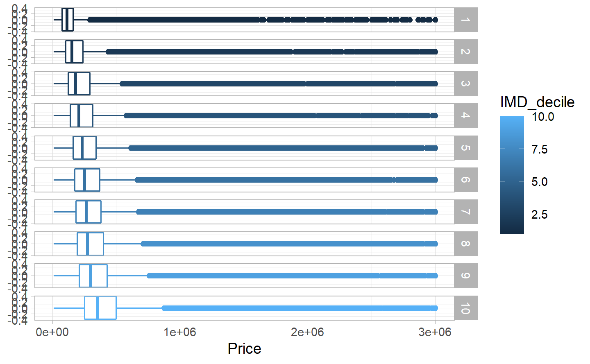

4 Analysis
In this part we are going to start looking at the datas in order to answer the reasearch question and give the answer at the end.
4.1 1st question : “Are the housing prices linked to the the Employment, Criminality, Income and Health deprivation levels of the different geographical regions ?”
Here the objective is to have a look at different component from de deprivation index and their effect on the prices to see which ones have the most and the least effect.
4.1.1 Correlation matrix
#> Income_rank Employment_rank Crime_rank Health_Deprivation_rank
#> Income_rank 1.000 0.941 0.627 0.792
#> Employment_rank 0.941 1.000 0.572 0.836
#> Crime_rank 0.627 0.572 1.000 0.588
#> Health_Deprivation_rank 0.792 0.836 0.588 1.000As we can see Employment and income are highly correlated, we will therefore only look at one of them in the following analysis. This analysis will be executed with the deciles and not the rank for a simple reason, that will reduce the x axis nd make the picture easier to look at.
4.1.2 Regression and coefficients
Before even showing any regression line, I have to say that I am only going to prin the line itself and will avoid bringing all the 900’000 points on each graphics to lower the calculation time and in any way, so many points would only make the graphic having a dark theme more than bringing any important information.
4.1.2.1 Income
We will first look at the Income , its regression and correlation information:
As we can see, at first sight we have a relationship which is positive, meaning that when the revenue rank or score increase, the Price of the housing increase too. it is a logical relatonship in the way that people have more money and therefore are ready to pay more to have a better home.
#>
#> Pearson's product-moment correlation
#>
#> data: Final_analysis_table$Price and Final_analysis_table$Income_decile
#> t = 48, df = 934101, p-value <2e-16
#> alternative hypothesis: true correlation is not equal to 0
#> 95 percent confidence interval:
#> 0.0472 0.0513
#> sample estimates:
#> cor
#> 0.0492As we can see, the correlation is really low, explaining only 4% of the evolution but the p-value is really low meaning that it is still statistically significant. It is therefore not to throw but it could clearly not be used all alone to explain anything.
With this model we have a intercept of 174839 and a slope of 30596 by decile which is quite a lot when you think about it. Even though the intercept is still quite higher than the minimum price we ca find in the most deprived area by looking at the tables for the 2nd question.
4.1.2.2 Crime
Now let’s have a look at the same things but for the crime decile:
We have again a positive relationship but this time it seems to be flatter than before. It does have a link but it looks like this time it is even lower than what it was for the income. lets find out by looking at the correlation informations:
#>
#> Pearson's product-moment correlation
#>
#> data: Final_analysis_table$Price and Final_analysis_table$Crime_decile
#> t = 21, df = 934101, p-value <2e-16
#> alternative hypothesis: true correlation is not equal to 0
#> 95 percent confidence interval:
#> 0.0198 0.0239
#> sample estimates:
#> cor
#> 0.0218Once again the correlation is low, this time even lower being around 2%, but again the p-value is extremely low therefore this is still statistically significant but could hardly be used alone to explain anything. Still lets check the slope and itnercept of this:
With this model we have a intercept of 279841 and a slope of 12980 by decile which is not that much this time, it looks like the relationship is more complex. In fact crimes are happening a lot in wealthy areas too and therefore the crime ranking will be quite different from the Income one. This could be explored further by maybe looking at which crime type has a link and which has not in further research.
4.1.2.3 Health
Let’s now check for the health levels :
We do have again a positive relationship which seems, visually at least to be quite similar to the one we had with the income. Let’s look once again at the correlation values:
#>
#> Pearson's product-moment correlation
#>
#> data: Final_analysis_table$Price and Final_analysis_table$Health_Deprivation_decile
#> t = 69, df = 934101, p-value <2e-16
#> alternative hypothesis: true correlation is not equal to 0
#> 95 percent confidence interval:
#> 0.0695 0.0736
#> sample estimates:
#> cor
#> 0.0716This time the correlation is a bit higher, around 7% and the p-value still indicate a that this is statistically significant which is quite interesting.
With this model we have a intercept of 105956 and a slope of 43209. This time it is closer to the values we have in the reality in terms of minimas and maximas even though it is not really perfect either.
To conclude for this question, there is an effect for each of the ranking we looked about sadly the effect is not that big, the key point to take here is the fact that at least when we look at this dataset the p-value is extremely low, therefore even though we are not explaining a lot of the variation with each one of the variables those could be included inside a model with the volume and other classical aspect from housing to create some more precise models. But this should still be analyzed by potential further research.
4.2 2nd question : “Are the mean, median prices and overall price range in an area linked to the IMD?”
 We can already see a trend here, the boxplot are slowly going to the right but let’s have a look at each individual value in a table to really see those numbers :| IMD decile | Minimum price | 1st quantile | Median price | mean price | 3rd quantile | Maximum price |
|---|---|---|---|---|---|---|
| 1 | 100 | 75000 | 113000 | 166090 | 162500 | 56700000 |
| 2 | 100 | 104000 | 152000 | 252012 | 239950 | 95000000 |
| 3 | 1 | 122500 | 182000 | 318627 | 295000 | 276570000 |
| 4 | 100 | 140000 | 206000 | 319421 | 315000 | 145000000 |
| 5 | 100 | 159950 | 232000 | 345599 | 345000 | 315000000 |
| 6 | 100 | 172000 | 250000 | 371628 | 374000 | 262890000 |
| 7 | 100 | 181500 | 262995 | 399046 | 382500 | 337000000 |
| 8 | 1 | 192000 | 275000 | 401738 | 400000 | 139480000 |
| 9 | 100 | 210000 | 296000 | 407304 | 430000 | 103050000 |
| 10 | 1 | 250000 | 350000 | 456046 | 502500 | 411500000 |
Let’s just plot that and then we will speak about it, we are not going to put the min and the max in the plt since this is not bringing that much to the analysis.
As it is nicely shown in the graph, the less deprived an area is in general, the higher the price is, it is quite logic but I would have though that some values could have been way closer than what they are because even if people are quite poor you can find some wealthy investment in the same area but this is not even really shown in this result. We can see this logic a little bit by looking at the mean and the 3rd quantile, they cross each other and the 3rd quantile is higher than the mean only for the 3 last deciles meaning that in the other deciles, the extremes have more “power” and move the mean higher than in the less deprived areas.
If we really look at the prices in the table, we can see that in all columns in between the least an and the most deprived we have a factor of 3 to 5 times the price going for example from 160 thousands up to 500 thousands for the 3rd quantile which is really impressive. What is more, we can see that the 1st quantile of the least deprived ares is at 250 thousands while as I just said, the 3rd quantile of the most deprived area is at 160 thousands, meaning that most of the 25 cheapest percent of the least deprived area housings cost more than the 25% most expensive ones in the highly deprived areas.
To conclude for this question,I believe that we can really see a link between the IMD and the price of the housing in a region. It is, in the end something that is logic but I am quite surprised by the level of this link.
4.3 3rd question : “Is there a difference in the type of housings depending on the deprivation levels?”
In order to answer this question we need to visualize the type of housing sold by LSOA:
As we can clearly see d have differences in what is sold in the different IMD levels. It seems that most of the sales from the least deprived area are detached and semi-detached housings while in the most deprived ones we have a lot of flats and terraced housings.
This is interesting in the way that it explains part of the price difference because as we saw in the EDA part, the price of the detached housing is generally higher than the price of the other housings. It does not explain the full difference but at least help to understand it a bit better. Let’s look at the distribution of prices by type of housing in the most and least deprived areas to have a really clear view:
| IMD decile | Housing tpe | 1st quantile | Median price | mean price | 3rd quantile |
|---|---|---|---|---|---|
| 1 | D | 160000 | 199950 | 220842 | 250000 |
| 1 | F | 72000 | 105795 | 157357 | 165000 |
| 1 | O | 70000 | 150000 | 573441 | 375000 |
| 1 | S | 99500 | 130000 | 139625 | 165995 |
| 1 | T | 65000 | 90000 | 107731 | 135000 |
| 10 | D | 329950 | 438000 | 536146 | 615000 |
| 10 | F | 170000 | 240000 | 308310 | 335000 |
| 10 | O | 150000 | 375000 | 1263185 | 820000 |
| 10 | S | 232500 | 315000 | 362471 | 425000 |
| 10 | T | 214000 | 287500 | 348976 | 395000 |
Although at first we could have though that the price link seen at the question 2 was due to the different type of housing we just looked at, it seems that by looking at this table, that part of this difference is coming more from the other types of housings where the prices have way bigger differences than the detached houses ones.
To conclude this question. We do have different “housing consumption” depending on the level of deprivation from the people which was quite logic in some way but it helps understanding more about the market.
4.4 4th question : “Are we building more in the less deprived area or in the most deprived?”
To answer this question we need to visualize the number of new building sold by IMD decile:
| IMD decile | New or old | Count |
|---|---|---|
| 1 | Y | 7752 |
| 2 | Y | 9662 |
| 3 | Y | 11547 |
| 4 | Y | 10308 |
| 5 | Y | 13139 |
| 6 | Y | 13746 |
| 7 | Y | 14065 |
| 8 | Y | 14875 |
| 9 | Y | 13348 |
| 10 | Y | 14392 |
Here we can clearly see that the majority of newly built housings are done in “mediumly” to lightly deprived areas since decile 5 to 10 have nearly all 2 times more newly built housing that were sold compared to the decile 1 which is the most deprived where there is quite a lot less new developments or at least it seems to be the case in the number of sales. This is logic in the way that those regions generally have way less money available but we could have thought that many developers would try to profit from those areas to transform them into better places and modify the city to make it look cleaner. This does not seem to happen and developers are or at least seemed to have played it quite safely by developing mainly into less deprived area that are looking better in the eyes of the buyers.